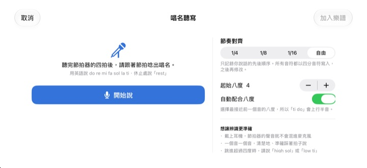
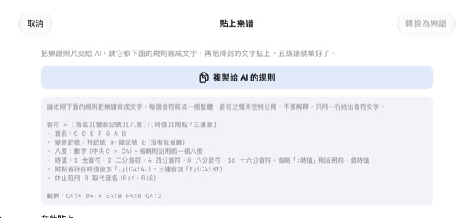

別再在腦中數拍子，
用耳朵確認
把拿不準的兩小節抄到五線譜上，點一下播放。預備拍一小節之後，跟著節拍器照原本的節奏和音高演奏出來。
所有功能免費，支援 iPhone 和 iPad。

寫幾個音，聽聽看
按住五線譜上下滑動可以換音，放開手指就放下音符。按播放，預備拍一小節後開始演奏。會發出聲音，請留意音量。
數著數著拍子又亂了？
附點八分接十六分，旁邊再來一組三連音，用手打著拍子數，不知不覺就對不上了。合唱練習前一晚，身邊往往也沒有鋼琴。用 StaffSinger 把這兩小節照抄到五線譜上，就能聽到準確的節奏和音高。
節奏和音高，照寫的播放
預備拍一小節後，跟著節拍器的滴答聲演奏，正在發聲的音符會以橘色標示。速度可在 40 到 200 BPM 之間調整，拍號可選 4/4、3/4、2/4、6/8、2/2、3/8。
同一拍上疊放音符就是和弦，會一起發聲；最多可分三個聲部書寫。高音譜號、中音譜號、低音譜號和調號也都能切換。

開口唸唱名，就變成音符
節拍器數完四拍後，跟著拍子說出 do re mi，音符就會寫進五線譜。踩著拍子說，還能依四分、八分、十六分記下時值。休止就說 rest。
唱名請用英語發音。語音只在裝置上辨識，不會儲存。

樂譜照片交給 AI，結果直接貼上
點 複製給 AI 的規則，連同樂譜照片一起交給 AI，再把它回傳的文字貼回來，五線譜就填好了。格式見下表。
也可以拍下紙本樂譜放在螢幕上，邊看邊抄。

三個步驟就能開始
- 1
挑出卡住的小節
打開 App 就是空白的兩小節五線譜。
- 2
寫下音符
按五線譜或彈鋼琴鍵盤來輸入。
- 3
按播放
預備拍之後，跟著節拍器播放。
貼上文字時的格式
- C4:4
- 第 4 八度的 C，四分音符（中央 C 為 C4）
- D:8
- 省略八度時沿用前一個音的八度
- F#4:8 · Bb4:4
- 升記號寫 #，降記號寫 b
- E4
- 省略「:時值」時沿用前一個音的時值
- :1 · :2 · :4 · :8 · :16
- 全音符、二分、四分、八分、十六分音符
- C4:4.
- 附點音符
- C4:8t
- 三連音
- R:4 · R:8
- 休止符
在 App 裡點「複製給 AI 的規則」，就會原樣複製這套格式說明。音符之間以空格分隔。
所有功能都免費
免費
- 五線譜輸入與兩個八度的鋼琴鍵盤
- 附預備拍和節拍器的播放
- 和弦與三個聲部
- 調號與三種譜號
- 唱名語音輸入
- 文字貼上與參考照片
支持開發者
- 可以在設定中送一點小費
- 送小費不會解鎖額外功能
不是訂閱，每次送出都是一次性付款。
沒有廣告，也不需要註冊帳號。
常見問題
要怎麼輸入音符？
先在工具列選好時值，再按住五線譜上想要的高度。按住時會聽到這個音，放開手指就放下音符。點鍵盤按鈕，也可以用兩個八度的鋼琴鍵盤輸入。
要怎麼做和弦？
打開工具列的「和弦」按鈕再輸入，新音符會疊在選取的音符上，一起發聲。
想修改已經寫好的音。
上下拖曳音符改音高，左右拖曳改所在的拍。選取音符後，用 ♯ ♭ 按鈕以半音移動，用 8va 按鈕以八度移動。
在哪裡改速度和拍號？
在設定裡，和譜號、調號放在一起。節拍器和預備拍的開關也在這裡。
沒有聲音。
請檢查靜音模式和媒體音量。如果只是聽不到節拍器，請到設定的「播放輔助」確認節拍器已開啟。
唱名輸入老是不準。
戴上耳機，節拍器的聲音就不會混進麥克風。一個音一個音、踩準拍子清楚地說。寫錯的音拖曳一下就能修正。
為什麼需要相機？
只用來拍下紙本樂譜，當作參考照片顯示在螢幕上。照片不會離開你的裝置。不允許使用相機，也可以從照片圖庫匯入。
支援哪些裝置？
iOS 17 或以上版本的 iPhone 和 iPad，介面為橫向設計。
我的樂譜或聲音會被上傳嗎？
不會。樂譜、照片和語音都留在裝置上，沒有網路也能使用。只有匿名的使用統計和當機報告會傳送到 iCloud，用來改進 App。
要怎麼聯絡開發者？
請寄信到 leeo@kakao.com，通常 2 到 3 個工作天內回覆。也歡迎在 GitHub 的 M1zz/StaffSinger 回報問題或提出功能建議。
有問題或建議，請寫信到 leeo@kakao.com。